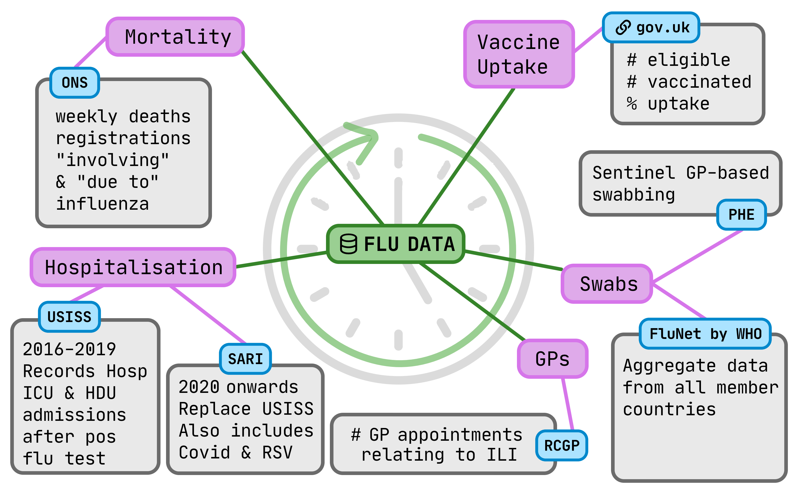
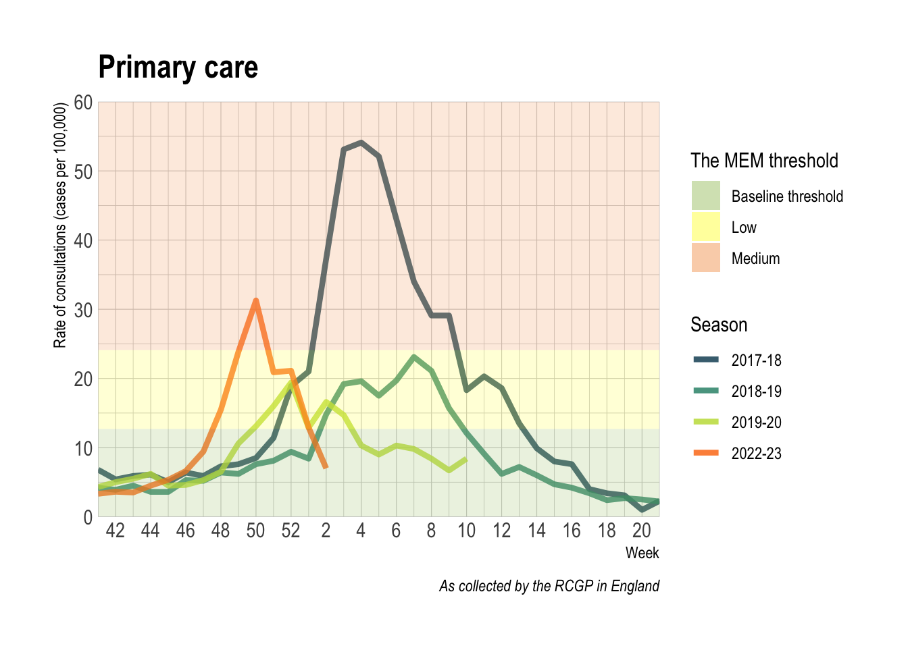
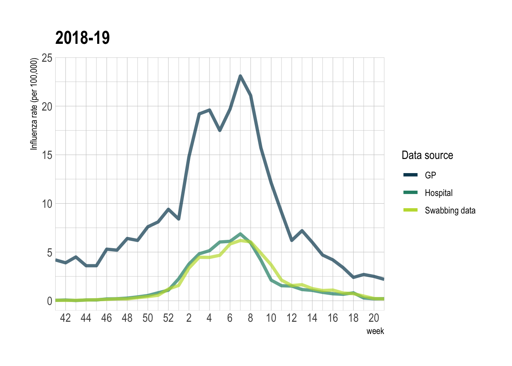
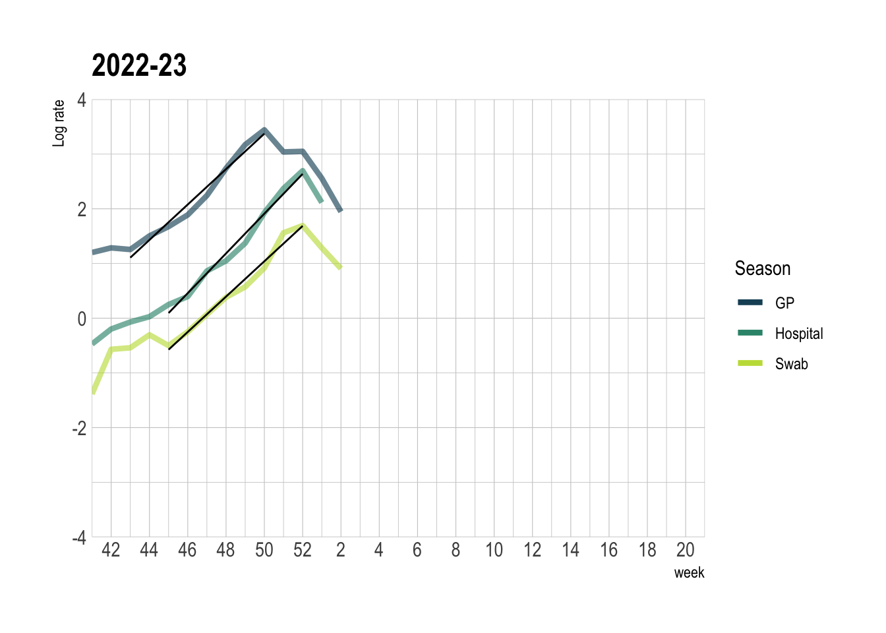
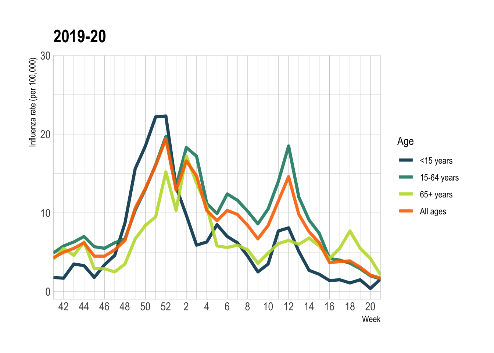
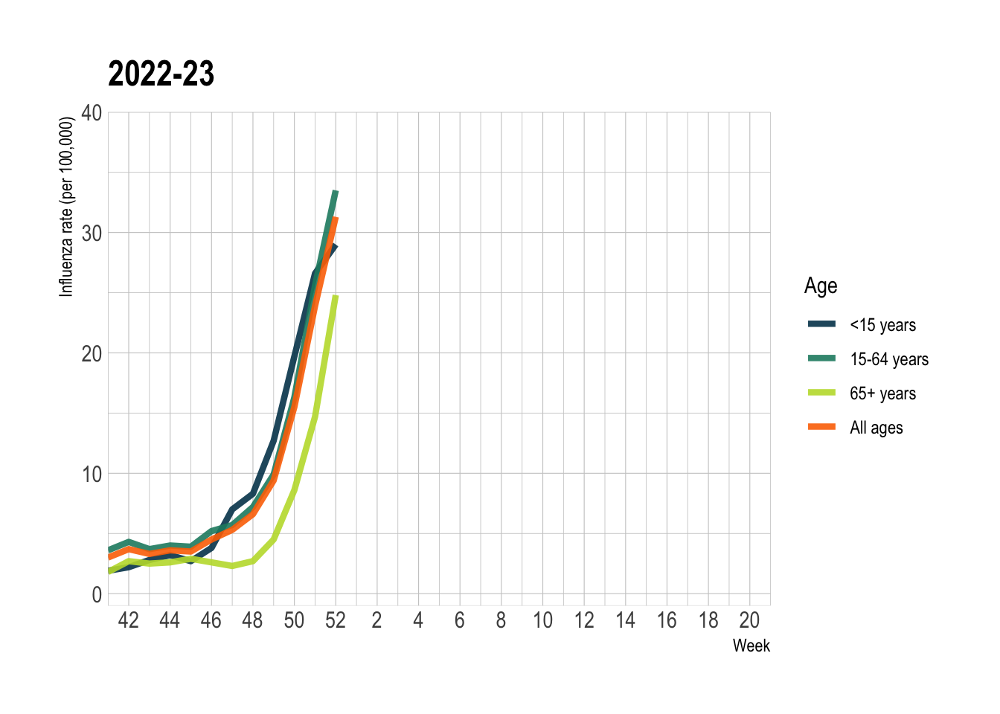

UKHSA report
Introduction
Influenza is a highly infectious and rapidly evolving respiratory virus circulating seasonally around the world [1]. The World Health Organisation (WHO) estimates that between 290000-650000 deaths occur due to the respiratory virus, not including deaths not due to secondary infections caused by influenza [WHO2022?]. Like most viruses, influenza is highly mutable. It can change on its own (i.e. antigenic drift), or cross with other strains (i.e. antigenic shift) [2], possibly leading to uncontrolled extensive spreads causing an epidemic (e.g. 1918-2009) [1]
Seasonal influenza appear in two types, classified as A and B. A types can are further broken down into subtypes H1N1 and H3N2 [2]. Each year, a combination of the A subtypes and B type influenza circulate throughout the population with different proportions. There is some evidence to suggest that H3N2 subtype is more severe than H1N1, leading to higher hospitalisation rates.
Serious progression of the virus may lead to deaths in at risk groups such as children <2 y.o., pregnant women, people >65 y.o. and people with underlying medical conditions, [3]. In a UK context, seasonal influenza circulation puts a burden on NHS especially hospital beds and GP services [1]. Having more data to help plan for seasonal peaks can help alleviate pressure on vital services.

Who is UKHSA and why are they interested
UK Health Security Agency (UKHSA) was created as a successor to Public Health England in April 2021 cite. Set up during the height of the COVID-19 pandemic, the UKHSA’s main priority is to tackle national health threats through the use of data analytics and developing vaccines cite.
Understanding the data of how flu is spread can help assist in planning vaccination roll-out. Vaccination is greatly beneficial as it averts between 180,000 and 626,000 cases of influenza per year in England, helping prevent between 5,678 and 8,800 premature deaths [4]. Furthermore, every death averted due to vaccination is estimated to save the NHS £50,610 [4].
In the UK there are three main ways that influenza is reported: through primary care data, hospitalisation and through swabbing programmes. Having three separate data sources is a valuable to compare whether the peak in the seasonal spread is in the same week or whether any of the data sources lag the others - identifying a possible prediction of a peak in hospitalisations for example. It also may be beneficial to know which strains are in circulation at which and what age group is being affected most. If there is a lag between age groups or strains, hosopitals may be able to prepare better for an oncoming wave of influenza cases.
Aims
We defined our main research question to address the issues descirbed above.
Question: What is the temporal relationship between different influenza data sources (lab-confirmed infections, GP consultations, hospitalisations) in the UK, and have these changed in 2022/23 compared to the pre-pandemic years 2016-2019?
Hypothesis: We suspect that there is a time delay between one source of surveillance and another and the scale of the one that peaks earlier might be predictive of the later ones (GP consultations being greater than hospitalisations for example). Secondly we believe there could be changes in reporting procedures for resp infections post-covid (swabbing increases). As children have more interactions in schools and nurseries, we would expect a larger peak for children before a peak in the older population.
Methods
Data sources and extraction

Primary care data was reported by the RCGP Research and Surveillance Centre communicable and respiratory disease reports, where cases of Influenza Like Illnesses that present in GP practices participating in the scheme are collected and reported for England and Wales [5].
Secondary care data is extracted from the UKHSA Severe Acute Respiratory Infection Watch system.
Mortality data is extracted from the UK Office for National Statistics (ONS) weekly bulletin of death registrations (England and Wales). The variable of interest is Deaths due to influenza and pneumonia (ICD J09-J18), and from 2020 onwards, Deaths involving to influenza and pneumonia (ICD J09-J18). These are defined by the occurrence of said phrase on either the first cause of death, or anywhere in the cause of death field.
Cross-correlation
Spearman’s non-parametric test of correlation (denoted \(ρ\)) is more suitable than Pearson’s in this situation, since the latter requires all variable to be normally distributed. Spearman’s \(ρ\) uses the ranks to replace the actual values within each variable. It runs as long as the variables are equal in length. The measurement of cross-correlation between pairs of variables should be as follows. One variable, denoted \(x_{t}\), is pinned to the present. A lag of positive integer \(k\) is applied to the other variable \(y\) to generate $y_{t},; y_{t+1},; y_{t+k} $ . For a given flu season, Spearman’s test is run repeatedly between \(x\) and each version of \(y\). The lag that gives the best correlation, denoted \(\arg\underset{k}\max \,\rho(x,y_{t+k})\), is reported for each year for each pair of variables.
Moving Epidemic Method
PHE and the UKHSA use the Moving Epidemic Method (MEM) to describe the severity of the epidemic season. This is calculated using through using previous epidemic activity [Rachovic?]. From for each of the data sources presented, we have used the MEM calculated and published by PHE and the UKHSA respectively in their weekly national flu reports.
\(R_0\) calculation
To further investgate the temporal relationships between the data sources, an effective reproduction number has been calculated. This can be inferred from the observed exponential growth rate seen at the beginning of a flu epidemic. The observed reproduction number \(R\) can be found through the linear equation \(R = 1 + \dfrac{r}{b}\) , where \(r\) is the rate of exponential growth and \(b\) is the rate of leaving the infectious stage [6]. By approximating the beginning of the growth curves as \(N=ke^{\frac{rt}{b}}\) (where \(k\) is a constant), the value \(\dfrac {r}{b}\) can be found from the gradient when plotting \(\log (N)\) against \(t\).
In practice, log graphs were plotted and a linear model was fitted to the points at the beginning of the epidemic. Using the gradient, the \(R_{\text{eff}}\) was calculated for each data source, each season.
Results
To see view the trends in the data and to first explore it, case rate per 100,000 people was ploted against epidemic week. Lines for each season have been represented on of the same plot, each for a different data source.
Source


Figure 3 and 4: FIgure 3 shows RCGP RSC reports of Influenze Like Illnesses in participating GP practices per 100,000 people across 4 flu seasons from 2017-2018 to 2022-23 with 2020-2021 and 2021-2022 removed. FIgure 4 shows flu cases reported by SARI watch and USISS Sentinel data for hospitalisations of patients with influenza per 100,000 people

Figure 5: Lab-confirmed cases of influenza, stratified by influenza strain (A and B). Data reported from PHE/UKHSA lab confirmed cases of influenza over the same time period.
In figures 3 and 4, we represent the Moving Epidemic Model thresholds against trends of primary and secondary care cases in the background.
We expected to see that over different seasons, peaks appear at different weeks. This is due to the complex nature of flu spread, the dynamics do not replicate every season. The size of the peaks however do indicate differing levels of severity in flu each season.
This initial presentation of our results shows similarity in temporal characterisitcs between the 2017-18 and 2018-19 flu seasons; and the 2019-20/2022-23 flu seasons. In primary care data, the peaks for the 2017-18 and 2018-19 flu seasons occur at 4 weeks (with a subsequent peak in 2018-19 at 7 weeks). We see a similar split in secondary care data. Secondary cases in 2017-18 peak at week 3, with a smaller peak across week 8-9. For 2018-19 it peaks at week 7. In lab confirmed cases of influenza A, both 2017-18 and 2018-19 flu seasons peak at week 7.
In the primary care data, the peaks for the 2019-20 and 22-23 season occur in the previous year at 52 and 50 weeks respectively. In secondary care data and lab confirmed cases of influenza A, the peaks for seasons 2019-20 and 2022-23 again occur in the previous year at week 52.
Lab confirmed cases of influenza A (Figure 5a) reinforce the backshift we see between the 2017-18/2018-19 seasons and the 2019-20/2022-23 seasons. The peak for the 2017-18 and 2018-19 season occur at week 7, similar to our finding s for secondary care and for reported primary care cases in the 2018-19 season. The peak for both 2019-20 and 2022-23 seasons occur at week 52, in line with the secondary care cases for both seasons, and primary care data for 2022-23.
Lab confirmed cases of infleunza B only appear to increase notable for the 2017-18 outbreak, with the cases for subsequent seasons not increasing to the same scale.
Its difficult to be confident in our post-covid analysis as the only data that we have available is the 2022-23 season, which at time of report writing is ongoing. The relationships observed on the breif analysis done amay not hold should the 2022-23 outbreak change in characteristic.
Season




– Jack matrix on correlation –
Log graphs and \(R_0\) value


To estimate the effective reproduction number between each of the data sources, the case rate per 100,000 was transformed using a natural logarithm and plotted against epidemiological week. The log plot resulted in a straight line during the initial exponential growth period and a tail after the peak of infections, as was expected from theory. The plots were evaluated to find which weeks to fit a linear model to. Using the linear model function in R, a line was overlaid on the log plots and coefficients of gradients for each of the lines were extracted. Using \(R = 1 + \frac{r}{b}\), as detailed above, the \(R_{eff}\) was calculated.
The estimated \(R_{eff}\) for each year and data source is detailed below. As expected at the beginning of a flu season, the R numbers are all above 1. It is noted that a higher reproduction number calculated for the data from hospitalisations than from GP consultations.
| Effective R values | |||
| Across flu seasons between 2017-18 and 2022-23 | |||
| Flu season | Sources of flu data | ||
|---|---|---|---|
| Primary care | Secondary care | Lab confirmed cases | |
| 2017-18 | 1.3 | 1.5 | 1.5 |
| 2018-19 | 1.1 | 1.4 | 1.4 |
| 2019-20 | 1.2 | 1.4 | 1.4 |
| 2022-23 | 1.2 | 1.4 | 1.3 |
| Note: Data removed for 2021-22 flu season due to effect of Covid-19 pandemic on flu cases | |||
Stratifying by age group

Stratified by Flu strain type



